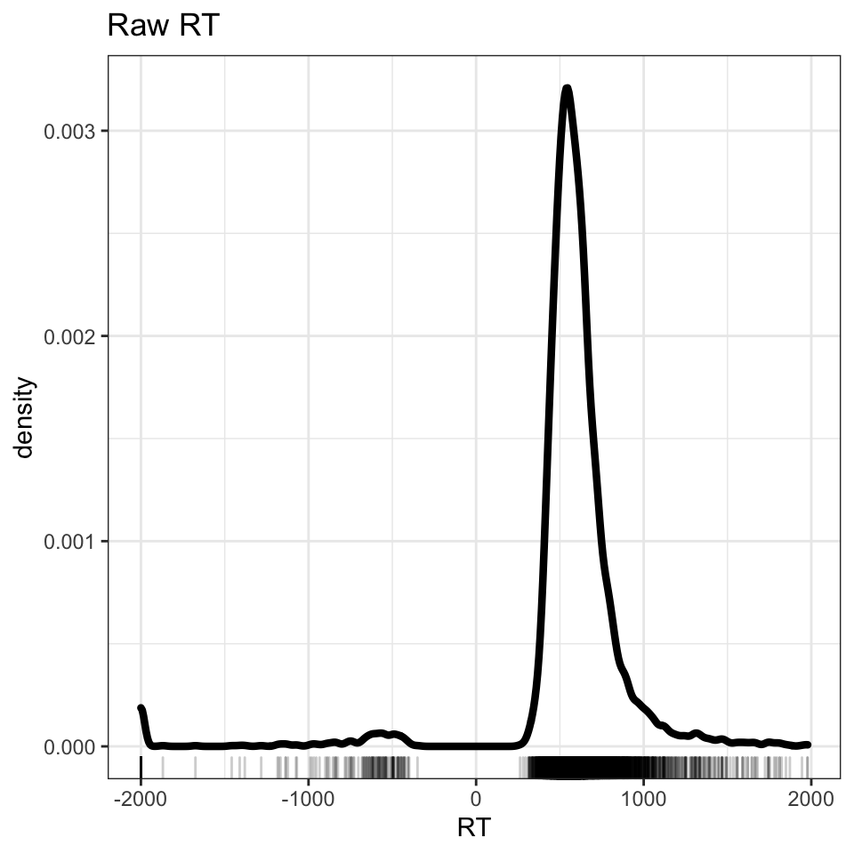
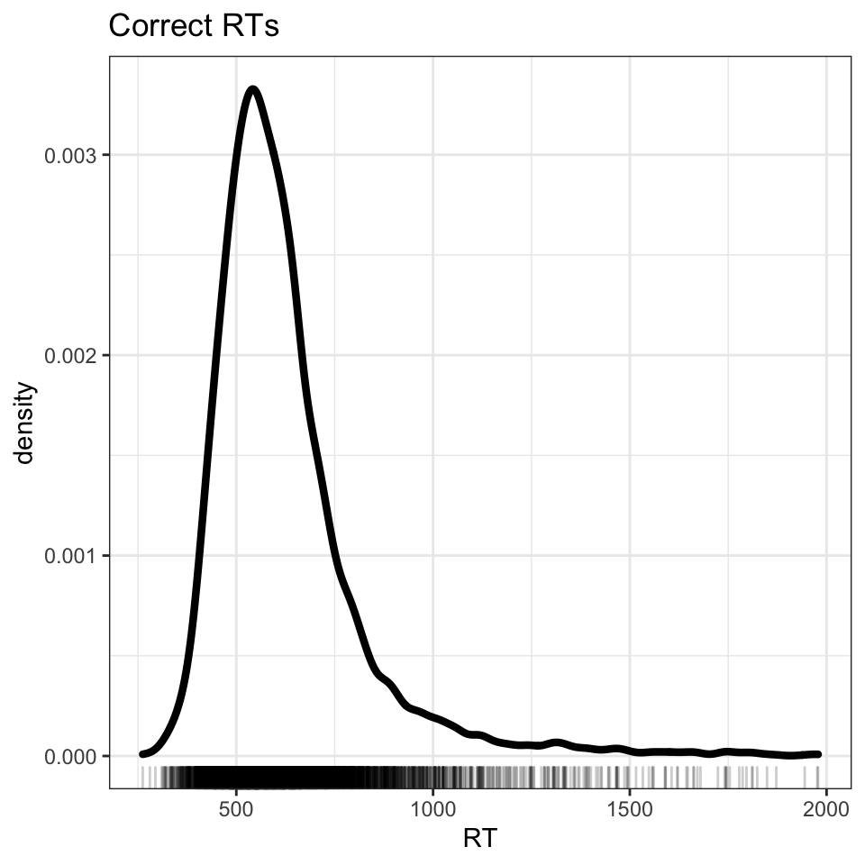
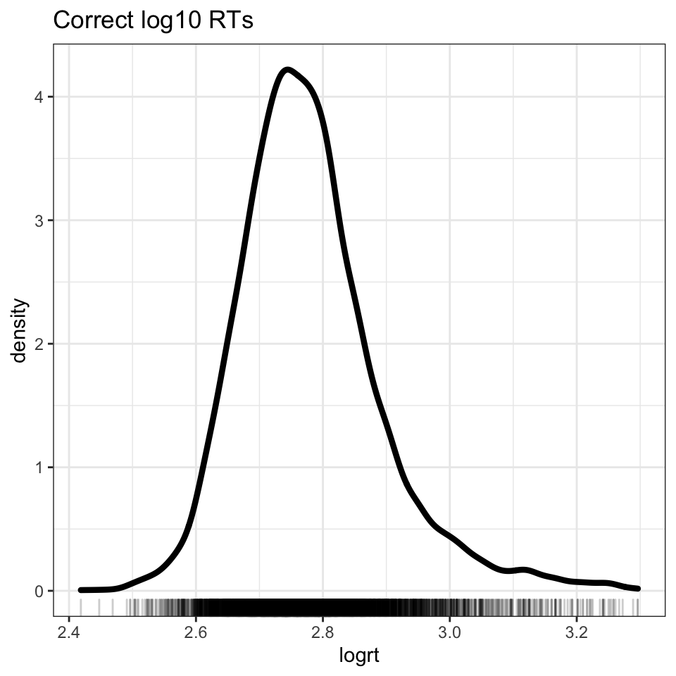
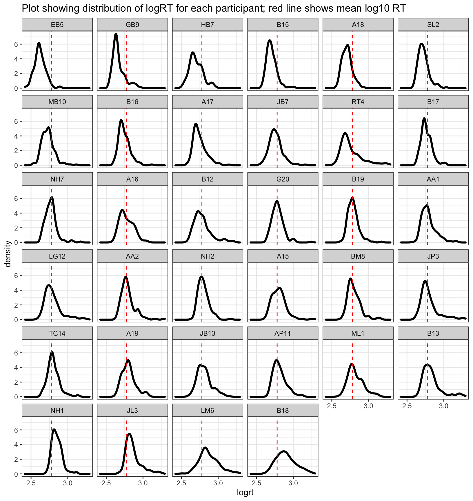
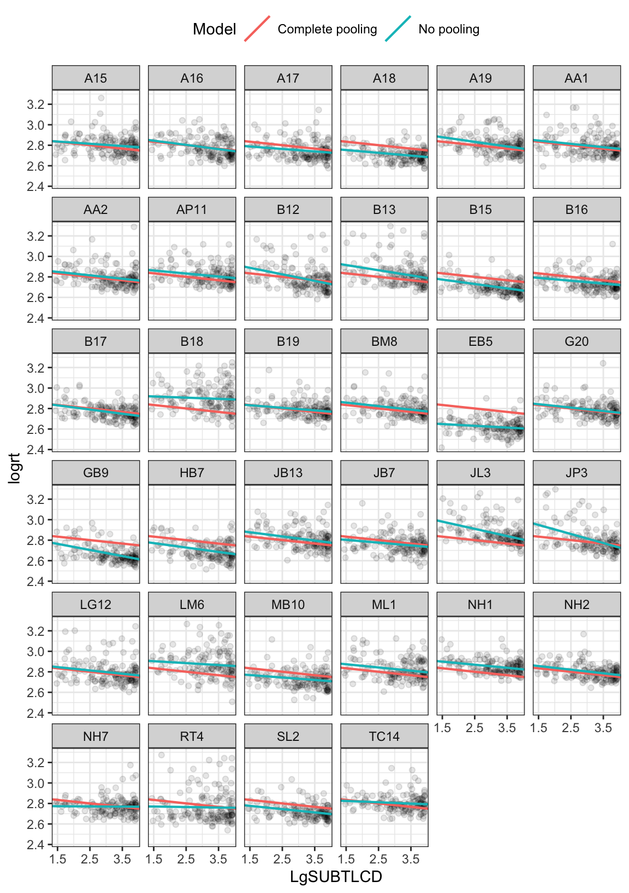
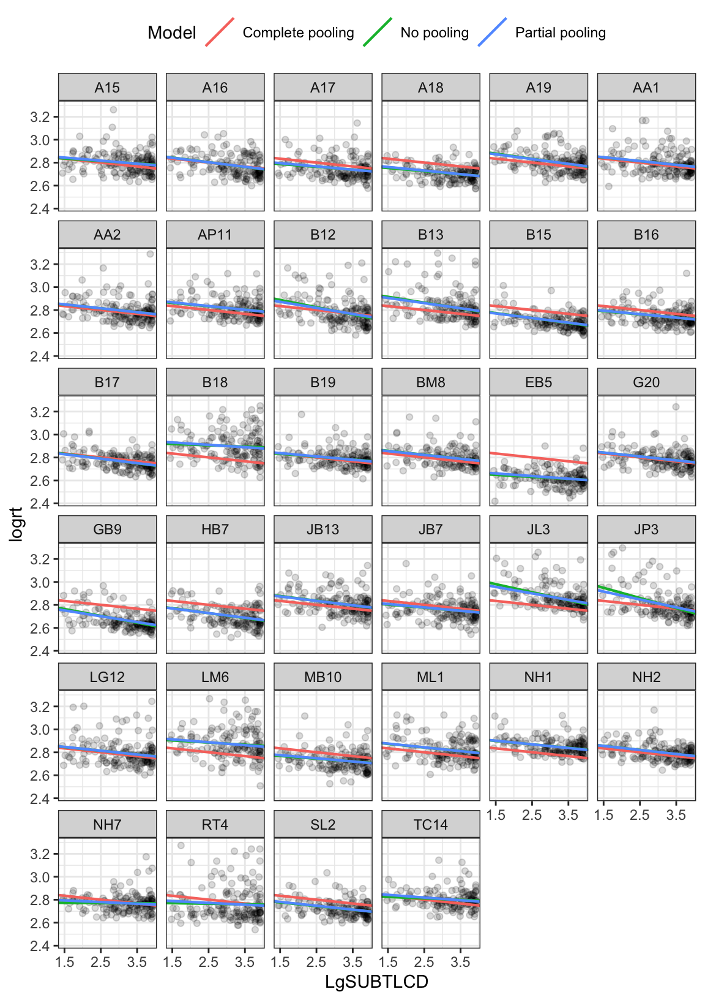
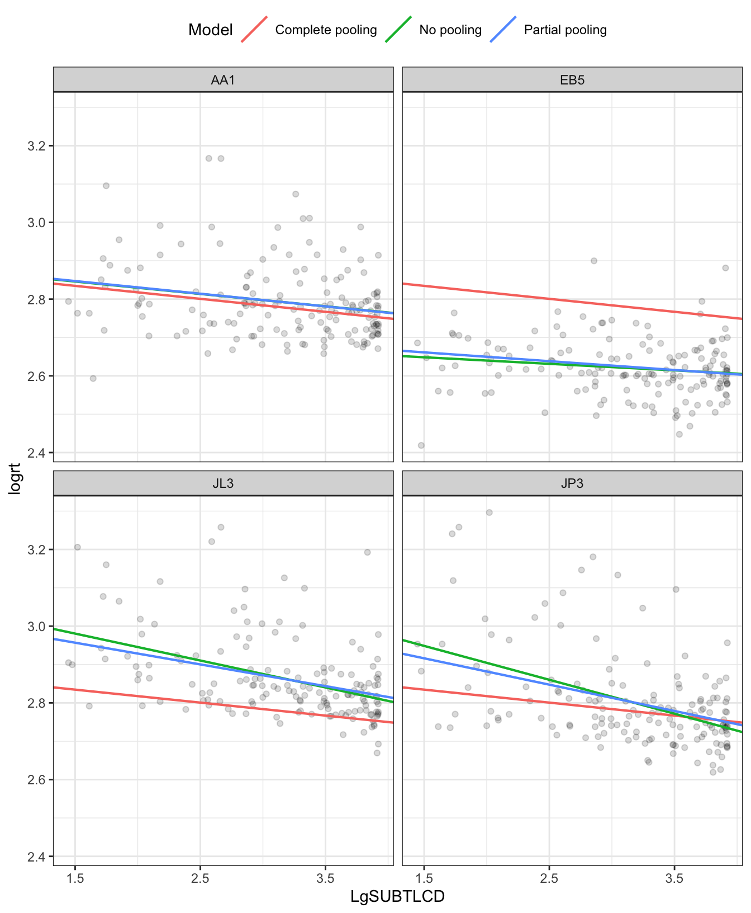
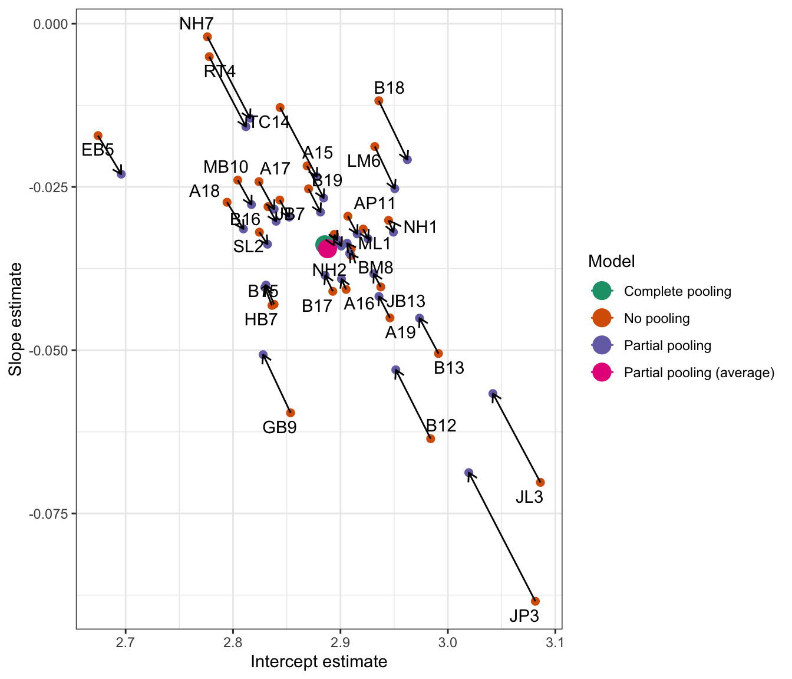

5 Developing linear mixed-effects models
5.1 Motivations: to grow in sophistication
Linear mixed-effects models are important, interesting, and sometimes challenging. We have worked through two chapters in which we have looked at three things: why multilevel or mixed-effects models are needed; what they can do; and what they involve.
We have learnt:
We now need to develop our understanding and skills further.
We have specified, run and looked at the results of mixed-effects models. We now need to examine some of the complexities that we may need to face when we are involved in mixed-effects modeling.
Our approach will continue to depend on verbal explanation, visualization and a practical code-based approach to the modeling.
5.2 The key idea to get us started
This means our models work better if they are informed by all the data, and take into account random differences but also if they are not too strongly influenced by individual (participant or item) data.
5.3 Targets
We are probably now at a stage, in the development of our skills and understanding, where we can be more specific about our targets for learning: what capacities or abilities we want to have by the time we complete the course. I have held back specifying the targets in this way because, first, we had to learn the basic vocabulary. Now that we have done that, we can lay out the targets against which we can assess the progression of our learning.
We have three components of the capacity we seek to develop. These components include the capacity to understand mixed-effects models, the capacity to work with them practically in R, and the capacity to present the results.
The truth is that development of skills and understanding in relation to each component will travel at different speeds, for different people, and within any person for different components. For example, I learnt to code and report mixed-effects models as soon as I learnt to recognize the situations where they were required. But it took me longer to understand what the models are, and what they involve. Other people will follow different developmental trajectories.
I think it is also true that our internal evaluation of our understanding will not exactly match the evaluation that comes from external assessment. In other words, we might not be satisfied with our understanding but, still, our understanding might be satisfactory. It might be that we can learn to say in words what mixed-effects models are or involve, or what their results mean, very effectively even if we remain unsure about our understanding. For these reasons, I specify what we are aiming to develop in terms of what we can do.
We want to develop the capacity to understand mixed-effects models, the capacity to:
We want to develop the capacity to work practically in R with mixed-effects models, the capacity to:
We want to develop the capacity to talk about and present the results of mixed-effects models, the capacity to:
5.4 Study guide
You will see that in the references list at the end, I have recommended some papers that I think provide particularly useful or readable introductions to Linear Mixed-effects Models.
5.5 The data we will work with: ML word recognition study
This week, we will be working with the ML word recognition study dataset. The focus of our interest is on the ways in which participant attributes (like age) or word properties (like frequency) influence the speed of response in a task measuring the ability to recognize visually presented English words.
ML examined visual word recognition in younger and older adults using the lexical decision task. Lexical decision is a very popular technique for examining word recognition, especially in adults. While not every MSc Psychology student will be interested in word recognition, or reading, everyone should understand that tasks like lexical decision are similar to a range of other tasks used in experimental psychological science. The critical features of the study are that we have an outcome – a decision response – observed multiple times (for each stimulus) for each participant. We shall be analyzing the speed of response, reaction time (RT), measured in milliseconds (ms).
Notice that where we analyze the effects of participant attributes on recognition response RTs, those attributes are recorded using a mix of survey questions (about age, etc.) and standardized ability tests. Taking individuals’ scores on standardized ability tests in order to analyze the performance of the same individuals in some experimental task is a very important feature of psychological research in many fields.
In the lexical decision task, participants completed a series of 320 trials. In each trial, they were presented with a stimulus, a string of letters, that was either a real word (e.g., ‘car’) or a made-up or non-word (e.g., ‘cas’). There were 160 word and 160 non-word stimuli. Each stimulus was presented one at a time on a computer screen. Participants were required to respond to the stimulus by pressing a button to indicate either that they thought the stimulus was a word (they knew) or that they thought it was a non-word. Each sequence of events, in which a stimulus was presented and a response was recorded, is known as a trial. The critical outcome measure was the reaction time of each response: the interval of time from the moment the stimulus was first presented (the stimulus onset) to the moment the response was made (the response onset).
The total number of participants for this study was 39, including a group of younger adults and a group of older adults. Information was collected about the participants’ age, education and gender. In addition, participants were asked to complete ability measures (TOWRE sight word and phonemic tests, Torgesen et al., 1999) and a measure of reading experience (Author Recognition Test, ART, Masterson & Hayes, 2007).
In summary, ML collected data on: lexical decision task response reaction times (RTs) and accuracy; information on lexical decision stimulus items, including variables like the length or frequency of words (values taken from the English Lexicon Project, Balota et al., 2007); and information on participants, including age, reading ability and reading experience.
The ML study data includes the following variables that we will work with (as well as some you can ignore):
Identifying variables
- subjectID – identifying code for participants
- item_name – words presented as stimuli
- item_number – identifying code for words presented
Response variables
- RT – response reaction time (ms), for responses to words
Subject variables
- Age – in years
- Gender – coded M (male), F (female)
- TOWRE_wordacc – word reading skill, words read correctly (out of 104)
- TOWRE_nonwordacc – nonword reading skill, nonwords (made up words) read correctly (out of 63)
- ART_HRminusFR – reading experience score
Item variables
Length – word length, in letters
Ortho_N – orthographic neighbourhood size, how many other words in English a stimulus word looks like
OLD – orthographic Levenshtein distance, how many letter edits (addition, deletion or substitution) it would take to make a stimulus word look like another English word (a measure of orthographic neighbourhood) (Yarkoni et al., 2008)
BG_Sum, BG_Mean, BG_Freq_By_Pos – measures of how common are pairs of letters that compose stimulus words
SUBTLWF, LgSUBTLWF, SUBTLCD, LgSUBTLCD – measures of how common stimulus words are, taken from the SUBTLEX corpus analysis of word frequency (Brysbaert and New, 2009)
5.5.1 Research hypotheses
Instead of posing a simple and general research question, we shall orient our work around a set of quite specific predictions. ML hypothesized:
5.5.2 Locate and download the data file
The data file can be downloaded as part of the .zip folder labelled PSYC402-03-mixed-resources.
You can download the folder from the Moodle section corresponding to this chapter:
Or you can download the folder directly from:
The data are held in one file:
The file is a comma separated values file and can be opened in Excel.
5.6 Tidy the data
In previous classes, we have needed to combine information about responses with information about participant attributes or stimulus properties, and we have needed to restructure the data so that they are in a tidy format. For this class, many steps in the process of data tidying were completed previously. Thus, we only need to perform steps 1, 3 and 4 of the usual process:
- Import the data or read the data into R, see Section @ref(import)
- Restructure the data
- Select or transform variables, see Section @ref(transform)
- Filter observations, see Section @ref(filter)
We are going to first filter the observations, then transform the outcome variable. We will explain why we have to do this as we proceed.
We will use tidyverse library functions to do this work, as usual.
library(tidyverse)5.6.1 Read-in the data file using read_csv
I am going to assume you have downloaded the data file, and that you know where it is. We use read_csv to read one file into R.
ML.all <- read_csv("subjects.behaviour.words-310114.csv", na = "-999")The data file subjects.behaviour.words-310114.csv holds all the data about everything (behaviour, participants, stimuli) we need for our analysis exercises in one big dataset.
It is always a good idea to first inspect what you have got when you read a data file in to R, before you do anything more demanding.
You can inspect the first few rows of the dataset using head().
head(ML.all)# A tibble: 6 × 25
item_number subjectID Test Age Years…¹ Gender TOWRE…² TOWRE…³ ART_H…⁴ RT
<dbl> <chr> <chr> <dbl> <dbl> <chr> <dbl> <dbl> <dbl> <dbl>
1 1 GB9 ALT 21 11 F 78 41 18 369.
2 1 NH1 TAL 52 18 M 78 56 33 725.
3 1 A15 LTA 21 16 F 95 57 9 484.
4 1 B18 TLA 69 11 M 85 54 10 518.
5 1 TC14 LAT 21 16 M 97 56 7 621.
6 1 B15 LTA 47 18 M 104 63 38 487.
# … with 15 more variables: COT <dbl>, Subject <chr>, Trial.order <dbl>,
# item_name <chr>, Length <dbl>, Ortho_N <dbl>, BG_Sum <dbl>, BG_Mean <dbl>,
# BG_Freq_By_Pos <dbl>, item_type <chr>, SUBTLWF <dbl>, LgSUBTLWF <dbl>,
# SUBTLCD <dbl>, LgSUBTLCD <dbl>, OLD <dbl>, and abbreviated variable names
# ¹Years_in_education, ²TOWRE_wordacc, ³TOWRE_nonwordacc, ⁴ART_HRminusFRYou can examine all the variables using summary().
summary(ML.all) item_number subjectID Test Age
Min. : 1.00 Length:5440 Length:5440 Min. :16.00
1st Qu.: 40.75 Class :character Class :character 1st Qu.:21.00
Median : 80.50 Mode :character Mode :character Median :21.00
Mean : 80.50 Mean :36.94
3rd Qu.:120.25 3rd Qu.:53.00
Max. :160.00 Max. :73.00
Years_in_education Gender TOWRE_wordacc TOWRE_nonwordacc
Min. :11.00 Length:5440 Min. : 68.00 Min. :16.00
1st Qu.:13.00 Class :character 1st Qu.: 84.00 1st Qu.:50.00
Median :16.00 Mode :character Median : 93.00 Median :55.50
Mean :14.94 Mean : 91.24 Mean :52.41
3rd Qu.:16.00 3rd Qu.: 98.00 3rd Qu.:57.00
Max. :19.00 Max. :104.00 Max. :63.00
ART_HRminusFR RT COT Subject
Min. : 1.00 Min. :-2000.0 Min. : 50094 Length:5440
1st Qu.: 7.00 1st Qu.: 498.1 1st Qu.: 297205 Class :character
Median :11.00 Median : 577.6 Median : 552854 Mode :character
Mean :15.15 Mean : 565.3 Mean : 575780
3rd Qu.:21.00 3rd Qu.: 677.4 3rd Qu.: 810108
Max. :43.00 Max. : 1978.4 Max. :1583651
Trial.order item_name Length Ortho_N
Min. : 21.0 Length:5440 Min. :3.0 Min. : 0.000
1st Qu.:100.8 Class :character 1st Qu.:4.0 1st Qu.: 3.000
Median :180.5 Mode :character Median :4.0 Median : 6.000
Mean :180.5 Mean :4.3 Mean : 7.069
3rd Qu.:260.2 3rd Qu.:5.0 3rd Qu.:11.000
Max. :340.0 Max. :6.0 Max. :24.000
BG_Sum BG_Mean BG_Freq_By_Pos item_type
Min. : 3.00 Min. : 1.00 Min. : 1.0 Length:5440
1st Qu.: 81.75 1st Qu.: 67.75 1st Qu.: 74.5 Class :character
Median :151.50 Median :153.50 Median :158.0 Mode :character
Mean :155.89 Mean :153.82 Mean :149.6
3rd Qu.:234.75 3rd Qu.:239.25 3rd Qu.:227.0
Max. :314.00 Max. :316.00 Max. :295.0
SUBTLWF LgSUBTLWF SUBTLCD LgSUBTLCD
Min. : 0.57 Min. :1.477 Min. : 0.32 Min. :1.447
1st Qu.: 17.36 1st Qu.:2.947 1st Qu.: 6.67 1st Qu.:2.748
Median : 69.30 Median :3.549 Median :23.64 Median :3.298
Mean : 442.01 Mean :3.521 Mean :36.52 Mean :3.137
3rd Qu.: 290.70 3rd Qu.:4.171 3rd Qu.:65.24 3rd Qu.:3.739
Max. :6161.41 Max. :5.497 Max. :99.70 Max. :3.922
OLD
Min. :1.000
1st Qu.:1.288
Median :1.550
Mean :1.512
3rd Qu.:1.750
Max. :2.050 The summary shows some features of the dataset, or of how R interprets the dataset, that are of immediate interest to us, though we do not necessarily have to do anything about them.
- We can see statistical summaries – showing the mean, median, minimum and maximum, etc. – of numeric variables like the outcome variable
RT, or candidate predictor variables likeLgSUBTLCD, a measure of the frequency of occurrence of words. - We can see statistical summaries, also, of variables that comprise number values but which we do not want to be treated as numbers, e.g., the word stimulus coding variable
item_number. - We can see that some variables are simply listed as
Class: character. That tells us that one or more values in the columns in the datasheet that correspond to these variables are words or strings of letters or alphanumeric characters. - There is no sign of the presence of missing values in this dataset, no counts of
NAs.
We do not really want R to treat a coding variable like item_number as numeric: it functions as a categorical or nominal variable, a factor. And we want R to treat coding variables like subjectID as factors. In previous chapters, we have ensured that R handles variables exactly as we require using either coercion i.e. using something like an as.factor() function call or, at the read-in stage, using col_types() specification. We are going to do neither here because we don’t have to do this work; not doing it will have no impact on our analyses at this point.
What we do need to do is deal with a problem that is already apparent in the summary statistics: we can see that RT includes values as low as -2000. That can’t be right.
5.6.2 Examine the distribution of raw RT data using density plots
We should examine the distribution of the outcome variable, lexical decision response reaction time (RT in ms). Observations about variable value distributions are a part of Exploratory Data Analysis and serve to catch errors in the dataset (e.g. incorrectly recorded scores) but also to inform the researcher’s understanding of their own data.
We shall examine the distribution of the outcome variable, lexical decision response reaction time (RT in ms), using density plots. An alternative method would be to use histograms. I choose to use density plots because they allow the easy comparison of the distributions of values of a continuous numeric variable like reaction time. A density plot shows a curve. You can say that the density corresponds to the height of the curve for a given value of the variable being depicted, and that it is related to the probability of observing values of the variable within some range of values (Howell, 2014).
Getting a density plot of RTs of responses is easy in ggplot().
ML.all %>%
ggplot(aes(x = RT)) +
geom_density(size=1.5) +
geom_rug(alpha = .2) +
ggtitle("Raw RT") +
theme_bw() 
The code delivers a plot (Figure @ref(fig:rt-all-density)) showing three peaks in the distribution of RT values. You can see that there is a peak of RT observations around 500-1000ms, another smaller peak around -500ms, and a third smaller peak around -2000ms.
The density plot shows the reaction times recorded for participants’ button press `yes’ responses to word stimuli in the lexical decision task. The peaks of negative RTs represent observations that are impossible. Remember that reaction time, in a task like lexical decision, represents the interval in time between the onset of a task stimulus (in lexical decision, a word or a nonword) and the onset of the response (the button press to indicate the lexical decision). We cannot have negative time intervals. The explanation is that ML collected her data using DMDX (Forster & Forster, 2003). DMDX records the reaction times for incorrect responses as negative RTs.
5.6.2.1 Code tip
The code to produce Figure @ref(fig:rt-all-density) works in a series of steps.
ML.all %>%takes the dataset, from the ML study, that we have read in to the R workspace and pipes it to the visualization code, next.ggplot(aes(x = RT)) +creates a plot object in which the x-axis variable is specified asRT. The values of this variable will be mapped to geometric objects, i.e. plot features, that you can see, next.geom_density(size=1.5) +first displays the distribution of values in the variableRTas a density curve. The argumentsize=1.5tells R to make the line \(1.5 \times\) the thickness of the line used by default to show variation in density. Some further information is added to the plot, next.geom_rug(alpha = .2) +with a command that tells R to add a rug plot below the density curve.ggtitle("Raw RT")makes a plot title.
Notice that beneath the curve of the density plot, you can see a series of vertical lines. Each line represents the x-axis location of an RT observation in the ML study data set. This rug plot represents the distribution of RT observations in one dimension.
geom_rug()draws a vertical line at each location on the x-axis that we observe a value of the variable, RT, named inaes(x = RT).geom_rug(alpha = .2)reduces the opacity of each line to ensure the reader can see how the RT observations are denser in some places than others.
You can see that we have many more observations of RTs from around 250ms to 1250ms, where the rug of lines is thickest, under the peak of the density plot. This indicates what the two kinds of plots are doing.
5.6.2.2 Exercise
You should try out alternative visualisation methods to reveal the patterns in the distribution of variables in the ML dataset (or in your own data).
Take a look at the geoms documented in:
Would a histogram or a frequency polygon provide a more informative view?
What about a dotplot?
5.6.3 Filter observations
The density plot shows us that the raw ML lexical decision RT variable includes negative RT values corresponding to incorrect response. These have to be removed. We can do this quite efficiently by creating a subset of the original “raw” data, defined according to the RT variable using the tidyverse library filter() function.
ML.all.correct <- filter(ML.all, RT >= 200)After we have removed negative (error) RTs, we check that the sizes of the datasets – their length, in other words, the number of rows – matches our expectations. We do this to make sure that we did the filter operation correctly.
length(ML.all$RT)[1] 5440length(ML.all.correct$RT)[1] 5257If you run the length() function calls then you should see that the length or number of observations or rows in the ML.all.correct dataset should be smaller than the number of observations in the ML.all dataset.
Having obtained a new data frame with data on just those trials where responses were correct, we can plot the distribution of RTs for just the correct responses (Figure @ref(fig:rt-correct-density)).
ML.all.correct %>%
ggplot(aes(x = RT)) +
geom_density(size=1.5) +
geom_rug(alpha = .2) +
ggtitle("Correct RTs") +
theme_bw()
5.6.3.1 Code tip
The filter code is written to subset the data by rows using a condition on the values of the RT variable.
ML.all.correct <- filter(ML.all, RT >= 200) works as follows.
ML.all.correct <- filter(ML.all ...)creates a new dataset with a new nameML.all.correctfrom the old datasetML.allusing thefilter()function.filter(... RT >= 200)specifies an argument for thefilter()function. In effect, we are asking R to look at every value in theRTcolumn. R will do a check through theML.alldataset, row by row. If a row includes an RT that is greater than or equal to 200 then that row will be included in the new datasetML.all.correct. But if a row includes an RT that is less than 200, then that row will not be included. We express this condition asRT >= 200.
The length() function will count the elements in whatever object is specified as an argument in the function call. This means that if you put a variable name into the function as in length(dataset$variable) it will count how long that variable is – how many rows there are in the column. If that variable happens to be, as here, part of a dataset, the same calculation will tell you how many rows there are in the dataset as a whole.
If you just enter length(dataset), naming some dataset, then the function will return a count of the number of columns in the dataset.
5.6.3.2 Exercise
- Change the threshold for including RTs from
RT >= 200to something else: you can change the number, or you can change the operators from>=to a different comparison. - Can you assess what impact the change has? Note that you can count the number of observations (rows) in a dataset using e.g.
length().
5.6.3.3 Filtering observations as a decision in the psychological research workflow
I choose to filter out or not only error responses (where \(RT < 0ms\)) but also short reaction times (where \(RT < 200ms\)). I think that any response in the lexical decision task that is recorded as less than 200ms cannot possibly represent a real word recognition response. Participants who complete experimental psychological tasks can and do press the button before they have time to engage the psychological processes (like word recognition) that the tasks we administer are designed to probe (like lexical decision). There is some relevant literature that concerns the speed at which neural word recognition processes operate. However, I think you should note that the threshold I am setting for exclusion, here, is essentially arbitrary. If you think about it, I could have set the threshold at any number from \(100-300ms\) or some other range. What is guiding me is experience but other researchers will have different experiences and set different thresholds. This is why using exclusion criteria to remove data is problematic.
Filtering or re-coding observations is an important element of the research workflow in psychological science. How we do or do not remove observations from original data may have an impact on our results (as explored by Steegen et al., 2016). It is important, therefore, that we learn how to do this reproducibly using, for example, R scripts that we can share with our research reports. I would argue that, at minimum, a researcher should report their research including:
- What exclusion criteria they use to remove data, explaining why.
- Report analyses with and without exclusions, to indicate if their results are sensitive to their decisions.
You can read further information about the practicalities of using R to do filtering here:
I very much recommend reading the discussion by Steegen et al. (2016) of the impacts of researcher choices in dataset construction analysis results.Don
5.6.4 Select or transform the variables: the log10 transformation of RT
Figure @ref(fig:rt-correct-density) shows that we have successfully removed all errors (negative RTs) but now we see how skewed the RT distribution is. Note the long tail of longer RTs.
Most researchers assume that participants – healthy young adults – take about 500-1000ms to perform the task and that values outside that range correspond to either fast guesses (RTs that are too short) or to distracted or tired or bored responses (RTs that are too long). In theory, the lexical decision task should be probing automatic cognitive processes, measuring the steps from perception to visual word recognition in the time interval between the moment the stimulus is first shown and the moment the button is pressed by the participant to indicate a response. Thus, it might seem natural to exclude extreme RT values which might correspond not to automatic cognitive processes but to unknowable distraction events or boredom and inattention. However, we shall complete no further data exclusions.
For now, we can look at a commonly used method to deal with the skew that we typically see when we examine reaction time distributions. RT distributions are usually skewed with a long tail of longer RTs. You can always take longer to press the button but there is a limit to how much faster you can make your response.
Generally, we assume that departures from a model’s predictions about our observations (the linear model residuals) are normally distributed, and we often assume that the relationship between outcome and predictor variables is linear (Cohen, Cohen, Aiken, & West, 2003). We can ensure that our data are compliant with both assumptions by transforming the RT distribution.
It is not cheating to transform variables. Transformations of data variables can be helpful for a variety of reasons in the analysis of psychological data (Cohen et al., 2003; Gelman & Hill, 2006). I do recommend, however, that you are careful to report what transformations you use, and why you do them.
Psychology researchers often take the log (often log base 10) of RT values before performing an analysis. Transforming RTs to the log base 10 of RT values has the effect of correcting the skew – bringing the larger RTs ‘closer’ (e.g., \(1000 = 3\) in log10) to those near the middle which do not change as much (e.g. \(500 = 2.7\) in log10).
ML.all.correct$logrt <- log10(ML.all.correct$RT) We can see the effect of the transformation if we plot the log10 transformed RTs (see Figure @ref(fig:rt-correct-log-density)). We arrive at a distribution that more closely approximates the normal distribution.
ML.all.correct %>%
ggplot(aes(x = logrt)) +
geom_density(size = 1.5) +
geom_rug(alpha = .2) +
ggtitle("Correct log10 RTs") +
theme_bw()
5.6.4.0.1 Code tip
The log10() function works as follows:-
ML.all.correct$logrt <- log10(...)creates a a new variablelogrt, adding it to theML.all.correctdataset. The variable is created using the transformation functionlog10().log10(ML.all.correct$RT)creates a the new variable by transforming (to log10) the values of the old variable,RT.
There are other log transformation functions and we often see researchers using the natural log instead of the log base 10.
5.6.5 Data tidying – conclusions
Even when data have been structured appropriately, we will still, often, need to do some tidying before we can do an analysis. Most research work involving quantitative evidence requires a big chunk of data tidying or other processing before you get to the statistics.
Our data are now ready for analysis.
5.7 Repeated measures designs and crossed random effects
As we saw in the Introduction to mixed-effects models, many Psychologists conduct studies where it is not sensible to think of observations as being nested (Baayen et al., 2008). In this chapter, we turn to the ML word recognition study dataset, which has a structure similar to the CP study data we worked with previously. Again, the core concern is that the data come from a study with a repeated-measures design where the experimenter presented multiple stimuli for response to each participant, for several participants, so that we have multiple observations for each participant and multiple observations for each stimulus. Getting practice with this kind of data will help you to easily recognize what you have got when you see it in your own work.
ML asked all participants in a sample of people to read a selection of words (a sample of words from the language). For each participant, we will have multiple observations and these observations will not be independent. One participant will tend to be slower or less accurate compared to another. Her responses may be more or less susceptible to the effects of the experimental variables. The lowest trial-level observations can be grouped with respect to participants. However, the data can also be grouped by stimuli. For each stimulus word, there are multiple observations and these observations will not be independent. One stimulus may prove to be more challenging to all participants compared to another, eliciting slower or less accurate responses on average. In addition, if there are within-items effects, we may ask if the impact of those within-items effects is more prominent, stronger, among responses to some items compared to others. Given this common repeated-measures design, we can analyse the outcome variable in relation to:
5.8 Working with mixed-effects models
We are going to respond to the multilevel (or crossed random effects) structure in the data by using linear mixed-effects models to analyze the data. This week, we are going to look at what mixed-effects models do from a new perspective.
Our concern will be with different ways of thinking about why mixed-effects models are superior to linear models where data have a multilevel structure. Mixed-effects models tend to be more accurate in this (very common) situation because of what is called partial pooling and shrinkage or regularization. We use our practical example to explore these ideas.
5.8.1 Use facetting in ggplot to examine data by person
To get started, we can examine – for each individual separately – the distribution of log RT observations, in Figure @ref(fig:rt-correct-log-den-by-subj).
ML.all.correct %>%
group_by(subjectID) %>%
mutate(mean_logrt = mean(logrt, na.rm = TRUE)) %>%
ungroup() %>%
mutate(subjectID = fct_reorder(subjectID, mean_logrt)) %>%
ggplot(aes(x = logrt)) +
geom_density(size = 1.25) +
facet_wrap(~ subjectID) +
geom_vline(xintercept = 2.778807, colour = "red", linetype = 2) +
scale_x_continuous(breaks = c(2.5,3)) +
ggtitle("Plot showing distribution of logRT for each participant; red line shows mean log10 RT") +
theme_bw()
Figure @ref(fig:rt-correct-log-den-by-subj) shows that RT distributions vary considerably between people. The plot imposes a dashed red line to indicate where the mean log10 RT is, calculated over all observations in the dataset. The plot shows the distribution of log RT for each participant, as a density drawn separately for each person. The individual plots are ordered by the mean log RT calculated per person, so plots appear in order from the fastest to the slowest.
The grid of plots illustrates some interesting features about the data in the ML study sample. You can see how the distribution of log RT varies between individuals: some people show widely spread reaction times; some people show quite tight or narrow distributions. You can see how the shapes of the distributions varies: some people show skew; others do not. I do not see that the variation in the shapes of the distributions is related to the average speed of the person’s responses.
I think the key message of the plot is that some distributions are wider (RTs are more spread out) than others. We might be concerned that people who present more variable reaction times (wider distributions) may be associated with less reliable estimates of their average response speed, or of the impact of word attributes (like word frequency) on their response speed.
5.8.1.1 Code tip
The plotting code progresses through a series of steps. This example demonstrates how you can combine data tidying and plotting steps in a single sequence, using tidyverse functions and the %>% pipe, so I will take the time to explain what is going on.
My aim is to create a grid of individual plots, showing the distribution of log RTs for each participant, so that the plots are presented in order, from the fastest participant to the slowest. Take a look at the plotting code. We can explain how it works, step by step.
ML.all.correct %>%
group_by(subjectID) %>%
mutate(mean_logrt = mean(logrt, na.rm = TRUE)) %>%
ungroup() %>%
mutate(subjectID = fct_reorder(subjectID, mean_logrt)) %>%
ggplot(aes(x = logrt)) +
geom_density(size = 1.25) +
facet_wrap(~ subjectID) +
geom_vline(xintercept = 2.778807, colour = "red", linetype = 2) +
scale_x_continuous(breaks = c(2.5,3)) +
ggtitle("Plot showing distribution of logRT for each participant; red line shows mean log10 RT") +
theme_bw()You will see that we present the distribution of RTs using geom_density() and that we present a separate plot for each person’s data using facet_wrap(). To these elements, we add some pre-processing steps to calculate the average response speed of each individual, and to reorder the dataset by those averages.
It will make it easier to understand what is going on if we consider the code in chunks.
First, we pre-process the data before we feed it into the plotting code.
ML.all.correct %>%
group_by(subjectID) %>%
mutate(mean_logrt = mean(logrt, na.rm = TRUE)) %>%
ungroup() %>%
mutate(subjectID = fct_reorder(subjectID, mean_logrt)) %>%
...ML.all.correct %>%takes the selected filtered datasetML.all.correctand pipes it%>%to the next step.group_by(subjectID) %>%tells R to group the data bysubject ID. We have a set of multiple log RT observations for eachsubjectIDbecause each participant was asked to respond to multiple word stimuli.mutate(mean_logrt = mean(logrt, na.rm = TRUE))next calculates and stores the mean log RT for each person. We create a new variablemean_logrt. We calculate the average of the set of log RTs recorded for eachsubjectIDand construct the new variablemean_logrtfrom these averages. We do not need to treat the data in groups so we remove the grouping, next.ungroup() %>%having grouped the data to calculate the mean log RTs, weungroupthe dataset so that R can look at all observations in the next step.mutate(subjectID = fct_reorder(subjectID, mean_logrt)) %>%asks R to look at all log RT observations in the dataset, and change the top-to-bottom order of the rows. We ask R to order observations bysubjectIDso that each person’s data are listed by their average speed, from the fastest to the slowest. We then pipe these ordered data to the plotting code, next.
If you delete or comment out these first lines, you will see that R uses just a default ordering, drawing the plot for each person in the alphabetical order of their subjectID codes. Try it, though don’t forget to start with ML.all.correct %>%.
Second, we draw the plots, using the data we have pre-processed.
ML.all.correct %>%
...
ggplot(aes(x = logrt)) +
geom_density(size = 1.25) +
facet_wrap(~ subjectID) +
...The key functions that create a grid of density plots are the following.
ggplot(aes(x = logrt))tells R to work withlogrtas the x-axis variable. We shall be plotting the distribution oflogrt.geom_density(...)draws a density plot to show the distribution of log RT, using a thicker linesize = 1.25facet_wrap(~ subjectID)creates a different plot for each level of thesubjectIDfactor: we want to see a separate plot for each participant.
facet_wrap(~ subjectID)works to split the dataset up by participant, with observations corresponding to each participant identified by theirsubjectID, and to then split the plotting to show the distribution of log RT separately for each participant.
I wanted to present the plots in order of the average speed of response of participants. If you look at Figure @ref(fig:rt-correct-log-den-by-subj) you can see that the position of the peak of the log RT distribution for each participant moves, from the fastest plots where the peak is around \(log RT = 2.5\) (shown from the top left of the grid), to the slowest plots where the peak is around \(log RT = 2.75\) (shown towards the bottom right of the grid)
We can then use further ggplot functions to edit the appearance of the plot, to make it more useful.
...
geom_vline(xintercept = 2.778807, colour = "red", linetype = 2) +
scale_x_continuous(breaks = c(2.5,3)) +
ggtitle("Plot showing distribution of logRT for each participant; red line shows mean log10 RT") +
theme_bw()geom_vline(xintercept = 2.778807, colour = "red", linetype = 2)draws a vertical red dashed line at the location of the mean log RT, the average of all log RTs over all participants in the dataset.scale_x_continuous(breaks = c(2.5,3))adjusts the x-axis labeling. Theggplotdefault might draw too many x-axis labels i.e. showing possible log RT values as tick marks on the bottom line of the plot. I want to avoid this as sometimes all the labels can be crowded together, making them harder to read.
- Drawing a vertical line at the mean calculated overall is designed to help the reader (you) calibrate their comparison of the data from different people.
5.8.1.2 Exercises
It is worthwhile experimenting with example code to figure out how it works. One way you can do this is by commenting out one line of code, at a time by putting the # at the start of the line. If you do this, you can see what the line of code does by, effectively, asking R to ignore it.
Another way you can experiment with code is by seeing what you can change and what effect the changes have.
5.8.2 Approximations to Linear Mixed-effects models: complete pooling
As we have discussed in previous chapters, a good way to approach a mixed-effects analysis is by first estimating the effects of the experimental variables (here, frequency) using linear models, ignoring the hierarchical structure in the data. A linear model of multilevel structured data can be regarded as an approximation to the better analysis. We model the effects of interest, using all the data (hence, complete pooling) but ignoring the differences between participants. This means we can see something of the ‘true’ picture of our data through the linear model results but the linear model misses important information, which the mixed-effects model will include, that would improve its performance.
As we saw in the last chapter, we can estimate the relationship between lexical decision RTs and word frequency using a linear model:
\[\begin{equation} Y_{ij} = \beta_0 + \beta_1X_j + e_{ij} \end{equation}\]
The linear model is fit in R using the function.
ML.all.correct.lm <- lm(logrt ~
LgSUBTLCD,
data = ML.all.correct)
summary(ML.all.correct.lm)
Call:
lm(formula = logrt ~ LgSUBTLCD, data = ML.all.correct)
Residuals:
Min 1Q Median 3Q Max
-0.41677 -0.07083 -0.01163 0.05489 0.53411
Coefficients:
Estimate Std. Error t value Pr(>|t|)
(Intercept) 2.885383 0.007117 405.41 <2e-16 ***
LgSUBTLCD -0.033850 0.002209 -15.32 <2e-16 ***
---
Signif. codes: 0 '***' 0.001 '**' 0.01 '*' 0.05 '.' 0.1 ' ' 1
Residual standard error: 0.1095 on 5255 degrees of freedom
Multiple R-squared: 0.04277, Adjusted R-squared: 0.04259
F-statistic: 234.8 on 1 and 5255 DF, p-value: < 2.2e-16We can see that, in this first analysis, the estimated effect of word frequency is \(\beta = -0.033850\). I know this looks like a very small number but you should realize that the estimates for the coefficients of fixed effects like the frequency effect are scaled according to the outcome. Here, the outcome is log10 RT, where a log10 RT of 3 equals 1000ms, and, as we can calculate in R
log10(0.925)[1] -0.03385827Also, remember that frequency is scaled in logs too, so the estimate of the coefficient tells us how log10 RT changes for unit change in log frequency. The coefficient represents the estimated change in log10 RT for unit change in log frequency LgSUBTLCD. So, as log frequency increases, logRT decreases by \(-0.033850\).
In this model, all the information from all participants is analyzed. In discussions of mixed-effects analyses, we say that this is a complete pooling model. This is because all the data have been pooled together, that is, we use all observations in the sample to estimate the effect of frequency.
In this model, the observations are assumed to be independent. However, we suppose that the assumption of independence is questionable given the expectation that participants will differ in their overall speed, and in the extent to which their response speed is affected by factors like word frequency.
5.8.2.1 Exercises
The ML study data, like the CP study data, are rich with possibility. It would be useful to experiment with it.
I would recommend that you both estimate the effects of variables and visualize the relationships between variables using scatterplots. If you combine reflection on the model estimates with evaluation of what the plots show you then you will be able to see how reading model results and reading plots can reveal the correspondences between the two ways of looking at your data.
5.8.3 Approximations to Linear Mixed-effects models: no pooling
We can examine variation between participants by analyzing the data for each participant’s responses separately, fitting a different linear model of the effect of word frequency on lexical decision RTs for each participant separately. Figure @ref(fig:no-vs-complete) presents a grid or trellis of plots, one plot per person. In each plot, you can see points corresponding to the log RT of each response made by a participant to a stimulus word. In all plots, the pink or red line represents the complete pooling model estimate of the effect of frequency on response RTs. The line is the same for each participant because there is only one estimated effect, based on all data for all participants. In addition, in each plot, you can see a green line. You can see that the line varies between participants. This represents the effect of frequency estimated using just the data for each participant, analyzed separately. These are the no pooling estimates. We call them the no pooling estimates because each is based just on the data from one participant.
Note: I was able to produce the plot in Figure @ref(fig:no-vs-complete) thanks to this helpful blog post by TJ Mahr:

Figure @ref(fig:no-vs-complete) reveals substantial differences between participants in both average response speed and the frequency effect, alongside variation in standard errors. We can predict variation in standard errors between participants given, also, the differences between participants in the spread of log RT, illustrated by Figure @ref(fig:rt-correct-log-den-by-subj). Basically, where the distribution of log RT is more widely spread out, for any one participant, there it will be harder for us to estimate with certainty the mean or the sources of variance for the participant’s response speed.
You will notice that the no pooling and complete pooling estimates tend to be quite similar. But for some participants more than others there is variation between the estimates.
You can reflect that the complete pooling is unsatisfactory because it ignores the variation between the participants: some people are slower than others; some people do show a larger frequency effect than others. You can also reflect that the no pooling is unsatisfactory because it ignores the similarities between the participants. While there is variation between participants there is also similarity across the group so that the effect of frequency is similar between participants. What we need is an analytic method that is capable of both estimating the overall average population-level effect (here, of word frequency) and taking into account the differences between sampling units (here, participants). That method is linear mixed-effects modeling.
5.9 The linear mixed-effects model
5.9.1 Fixed and random effects
As you have seen before, we can account for the variation – the differences between participants in intercepts and slopes. First, we model the intercept as two terms:
\[\begin{equation} \beta_{0i} = \gamma_0 + U_{0i} \end{equation}\]
We can model the frequency effect as two terms:
\[\begin{equation} \beta_{1i} = \gamma_1 + U_{1i} \end{equation}\]
We can then incorporate in a single model the fixed effects due to the average intercept and the average frequency effect, as well as the random effects, error variance due to unexplained differences between participants in intercepts and in frequency effects:
\[\begin{equation} Y_{ij} = \gamma_0 + \gamma_1X_j + U_{0i}+ U_{1i}X_j + e_{ij} \end{equation}\]
- where the outcome \(Y_{ij}\) is related to …
- the average intercept \(\gamma_0\) and differences between \(i\) participants in the intercept \(U_{0i}\);
- the average effect of the explanatory variable frequency \(\gamma_1X_j\) and differences between \(i\) participants in the slope \(U_{1i}X_j\);
- in addition to residual error variance \(e_{ij}\).
5.9.2 Variance and covariance
As we first saw in the last chapter, in conducting mixed-effects analyses, we do not aim to examine the specific deviation (here, for each participant) from the average intercept or the average effect or slope. We estimate just the spread of deviations by-participants. A mixed-effects model like our final model actually includes fixed effects corresponding to the intercept and the slope of the word frequency effect plus the variances:
We may expect the random effects of participants or items to covary, e.g., participants who are slow to respond may also be more susceptible to the frequency effect. Thus our specification of the random effects of the model can incorporate terms corresponding to the covariance of random effects:
5.9.3 Random effects of differences between stimuli
As we know, some words elicit slower and some elicit faster responses on average. As we discussed in the last chapter, if we did not take such variation into account, we might spuriously identify an experimental effect actually due just to unexplained between-items differences in intercepts (Clark, 1973; Raaijmakers et al., 1999), committing an error: The language as fixed effect fallacy.
We can model the random effect of items on intercepts by modeling the intercept as two terms:
\(\beta_{0j} = \gamma_0 + W_{0j}\)
Note that I ignore the possibility, for now, of differences between items in the slopes of fixed effects but I do come back to this.
Remember that the The language as fixed effect fallacy implies that thinking about the random effects of stimulus differences applies only when we are looking at experiments about language. But you should remember that we need to think about the impact of random differences between stimuli whenever we present samples of stimuli to participants, and we collect observations about multiple responses for each stimulus. This is true whatever the nature of the stimuli.
5.9.4 A model including random effects of differences between stimuli as well as participants
Our model can now incorporate the random effects of participants as well as items:
\(Y_{ij} = \gamma_0 + \gamma_1X_j + U_{0i}+ U_{1i}X_j + W_{0j} + e_{ij}\)
In this model, the outcome \(Y_{ij}\) is related to the average intercept \(\gamma_0\) and the word frequency effect \(\gamma_1X_j\) plus random effects due to unexplained differences between participants in intercepts \(U_{0i}\) and the slope of the frequency effect \(U_{1i}X_j\) as well as random differences between items in intercepts \(W_{0j}\), in addition to the residual term \(e_{ij}\).
5.9.5 Fitting a mixed-effect model using lmer()
We fit a mixed-effects model of the \(logrt \sim frequency\) relationship using the lmer() function, taking into account:
The model syntax corresponds to the statistical formula and the code is written as:
ML.all.correct.lmer <- lmer(logrt ~
LgSUBTLCD +
(LgSUBTLCD + 1|subjectID) +
(1|item_name),
data = ML.all.correct)
summary(ML.all.correct.lmer)As will now be getting familiar, the code works as follows:
If you run the model code as written then you would see the following results.
Linear mixed model fit by REML ['lmerMod']
Formula: logrt ~ LgSUBTLCD + (LgSUBTLCD + 1 | subjectID) + (1 | item_name)
Data: ML.all.correct
REML criterion at convergence: -9868.1
Scaled residuals:
Min 1Q Median 3Q Max
-3.6307 -0.6324 -0.1483 0.4340 5.6132
Random effects:
Groups Name Variance Std.Dev. Corr
item_name (Intercept) 0.0003268 0.01808
subjectID (Intercept) 0.0054212 0.07363
LgSUBTLCD 0.0002005 0.01416 -0.63
Residual 0.0084333 0.09183
Number of obs: 5257, groups: item_name, 160; subjectID, 34
Fixed effects:
Estimate Std. Error t value
(Intercept) 2.887997 0.015479 186.577
LgSUBTLCD -0.034471 0.003693 -9.333
Correlation of Fixed Effects:
(Intr)
LgSUBTLCD -0.764In these results, we see:
5.9.5.1 Why aren’t there p-values?
We will come back to this, see Section @ref(p-values). However, note that if \(t >= 2\) we can suppose that (for a large dataset) an effect is significant at the \(.05\) significance level.
5.10 Mixed-effects models, partial pooling, and shrinkage or regularisation of estimates
What is the impact of the incorporation of random effects – the variance and covariance terms – in mixed-effects models? Mixed-effects models can be understood, in general, as a method to compromise between ignoring the differences between groups (here, participants constitute groups of data) as in or focusing entirely on each group (participant) as in (Gelman & Hill, 2006). In this discussion, I am going to refer to the differences between participants but you can assume that the lesson applies generally to any situation in which you have different units in a multilevel structured dataset in which the units correspond to groups or clusters of data, as in the multiple observations recorded for each participant in the ML dataset.
5.10.1 Overfitting
The problem with ignoring the differences between groups (participants), as in the complete pooling model (here, the linear model), has been obvious when we examined the differences between participants (or between classes) in slopes and intercepts in previous weeks. The problem with focusing entirely on each participant, as in the no pooling model, has not been made apparent in our discussion yet.
If we analyze each participant separately then we will get, for each participant, for our model of the frequency effect, the per-participant estimate of the intercept and the per-participant estimate of the slope of the frequency effect. These no-pooling estimates will tend to exaggerate or overstate the differences between participants (Gelman & Hill, 2006). By basing the estimates on just the data for a person, in each per-participant analysis, the no-pooling approach the data. You could say that the no-pooling approach gives us estimates that depend too much on the sample of data we have got, and are unlikely to be similar to the estimates we would see in other samples in future studies. The no-pooling estimates are influenced by the data we are currently analyzing.
5.10.2 Partial pooling: shrinkage or borrowing strength
If we look closely at Figure @ref(fig:no-vs-complete), we can see that there are similarities as well as differences between participants. Our analysis must take both into account.
What happens in mixed-effects models is that we pool information, calculating the estimates for each participant, in part based on the information we have for the whole sample (all participants, in complete pooling), in part based on the information we have about the specific participant (one participant, in no pooling). Thus, for example, the estimated intercept for a participant in a mixed-effects model is given by the weighted average of:
The weighted average will reflect our relative level of information about the participant’s responses compared to how much information we have about all participants’ responses.
To make sense of what this means, think about the differences between participants in how much reliable information we can have, given our sample, about their average level of response speed or about how they are affected by experimental variables. Think back to my comments about Figure @ref(fig:rt-correct-log-den-by-subj), about the differences between participants in how spread out the distributions of their log RT values are. Recall that I said that where participants’ responses are more spread out – just as where we have less observations for some participants than for others – we shall inevitably have less certainty about our estimates for the effects that influence their performance if we base our account on just their data. Mixed-effects models perform better – as prediction models – than no pooling approaches because they are not relying, for any participant, on just their sometimes unreliable data.
We can look again at a plot showing the data for each participant. Figure @ref(fig:no-vs-complete-vs-partial) presents a grid or trellis of plots, one plot per person. In each plot, you can see points corresponding to the RT of each response made by a participant to a stimulus word. In all plots, the pink line represents the complete pooling data model estimate of the effect of frequency on response RTs. In each plot, the green line represents the effect of frequency estimated using just the data for each participant, the no pooling estimates. Now, we also see blue lines that represent the mixed-effects model partial pooling estimates.

It is quite difficult to identify, in this sample, where the partial pooling and no pooling estimates differ. We can focus on a few clear examples. Figure @ref(fig:no-vs-complete-vs-partial-zoom) presents a grid of plots for just four participants. I have picked some extreme examples but the plot illustrates how: (1.) for some participants e.g. all estimates are practically identical; (2.) for some participants the no-pooling and complete-pooling estimates are really quite different and (3.) for some participants the no-pooling and partial-pooling estimates are quite different.

In general, partial pooling will apply both to estimates of intercepts and to estimates of the slopes of fixed effects like the influence of word frequency in reaction time. Likewise, if we consider this idea in general, we can see how it should work whether we are talking about groups or clusters of data grouped by participant or by stimulus or by school or class or clinic
Formally, whether an estimate for a participant (in our example) is pulled more or less towards the overall estimate will depend not just on the number of data-points we have for that person. The optimal combined estimate for a participant is termed the ‘estimate’ and the weighting – the extent to which the per-participant ‘estimate’ depends on the participant’s data or the overall data – depends on the reliability of the estimate (of the intercept or the frequency effect) given by analyzing that participant’s data (Snijders & Bosker, 2012). If you think about it, smaller samples – e.g. where a participant completed less correct responses – will give you less reliable estimates (and so will samples that show more variation).
What we are looking at, here, is a form of in which we use all the sources of information we can to ensure we take into account the variability in the data while not getting over-excited by extreme differences (McElreath, 2015). We want to see estimates pulled towards an overall average where we have little data or unreliable estimates. We can see how strongly estimates can be shrunk in a plot like Figure @ref(fig:shrinkage).
Figure @ref(fig:shrinkage) illustrates the shrinkage effect. I plotted a scatterplot of intercept and slope parameters from each model (models with different kinds of pooling), and connect estimates for the same participant. The plot uses arrows to connect the different estimates for each participant, different estimates from no-pooling (per-participant) compared to partial-pooling (mixed-effects) models. The plot shows how more extreme estimates are shrunk towards the global average estimate.

We can see how estimates are pulled towards the average intercept and frequency effect estimates. The shrinkage effect is stronger for more extreme estimates like . It is weaker for estimates more (realistically) like the overall group estimates like .
5.11 Estimation methods – An intuitive account of estimation in mixed-effects models
Before we move on, we can think briefly about how the mixed-effects models are estimated (Snijders & Bosker, 2012). Where do the numbers come from? I am happy to stick to a fairly non-technical intuitive explanation of the computation of LMEs but others, wishing to understand things more deeply, can find computational details in Pinheiro & Bates (2000), among other places. Mixed-effects models are estimated
In mixed-effects models, the things that are estimated are the fixed effects (the intercept, the slope of the frequency effect, in our example), along with the variance and correlation terms associated with the random effects. Previously, I referred to the partial-pooling mixed-effects ‘estimates’ of the intercept or the frequency effect for each person, using the quotation marks because, strictly, these estimates are actually predictions, Best Unbiased Linear Predictions (BLUPs), based on the estimates of the fixed and random effects.
5.11.1 Convergence problems
Mostly, our main concern, in working with mixed-effects models, is over what effects we should include, what model we should specify. But we should prepare for the fact sometimes happens that models fail to converge, which is to say, the model fitting algorithm fails to settle on some set of parameter estimates but has reached the limit in the number of iterations over which it has attempted to find a satisfactory set of estimates. In my experience, convergence problems do arise, typically, if one is analyzing categorical outcome data (e.g accuracy) where there may be not enough observations to distinguish satisfactory estimates given a quite complex hypothesized model. In other words, you might run into convergence problems but it will not happen often and only where you are already dealing with quite a complex situation. We take a look at this concern in more depth, in the next chapter (but see Jaeger, 2008, for a discussion of Generalized Linear Mixed-effects models, GLMMs; see Baayen, 2008, for a how-to guide). We need to start preparing our understanding now.
5.12 Fitting and evaluating Linear Mixed-effects models
Up to this point, we have discussed the empirical or conceptual reasons we should expect to take into account, in our model, the effects on the outcome due to systematic differences in the experimental variables, e.g., in stimulus word frequency frequency, or to random differences between participants or between stimuli. We can now think about how we should statistically evaluate the relative usefulness of these different fixed effects or random effects, where usefulness is judged in relation to our capacity to explain outcome variance, or to improve model fit to sample data. We shall take an approach that follows the approach set out by Baayen, Bates and others (Baayen et al., 2008; Bates et al., 2015; Matuschek et al., 2017).
In this approach, we shall look at the choices that psychology researchers have to make. Researchers using statistical models are always faced with choices. As we have seen, these choices begin even before we start to do analyses, as when we make decisions about dataset construction (Steegen et al., 2016). The need to make choices is always present for all the kinds of models we work with. This may not always be obvious because, for example, in using some data analysis software, researchers may rely on defaults with limited indication that that is what they are doing. Just because we are making choices does not mean we are operating subjectively in a non-scientific fashion, rather, provided we work in an appropriate mode of transparency or reflectiveness, it means we are working with an awareness of our options and the context for the data analysis (see discussion in Gelman & Hennig, 2017).
5.12.1 Model comparison approach
It is very common to see researchers using a process of model comparison to try to identify an account for their data in terms of estimates of fixed and random effects. A few key concepts are relevant to taking this approach effectively.
We will focus on building a series of models up to the most complex model supported by the data.
What does model complexity mean here? I am talking about something like the difference between a model including just main effects (simpler) and a model including both main effects and the interaction between the effects (more complex) or a model included just fixed effects (simpler) and a model including fixed effects as well as random effects (more complex).
Researchers may engage in comparing models to examine if one or more random effects should be included in their linear mixed-effects model. They may not be sure if they should include all random effects, that is, all random effects that could be included, given a range of grouping variables, like participant, class or stimulus, and given a range of possible effects, such as whether slopes or intercepts might vary.
Researchers may do model comparison to check if adding the effect of an experimental variable is justified. Maybe they are conducting an exploratory study in which they want to investigate if using some measurement variable helps to explain variation in the outcome. Perhaps they are conducting an experimental study in which they want to test if the experimental manipulation, or the difference between conditions, has an impact on the outcome.
Across these scenarios, we can test if an effect should be included or if its inclusion in a model is justified by comparing models with versus without the term that corresponds to the effect. In some studies, researchers conduct model comparisons like this in order to obtain null hypothesis significance tests for the effects of the experimental variables. Typically, the model comparisons are focused on whether some measurement of model fit is or is not different when we do versus do not include the effect in question in the model.
5.12.1.1 Exercise – Model comparison questions
As our discussion progresses, I think it would be helpful to reflect on some of the questions that you may be asking yourself.
You might well ask yourself: if we engage in a bunch of comparisons to check if we should or should not include a variable, isn’t this just exploiting researcher degrees of freedom? Or, you might ask: if we are conducting multiple tests on the same data, aren’t we running the risk of raising the Type I error (false positive) rate because we are doing multiple comparisons? I think these are good questions but, here, my task is to explain what people do, why they do it, and how it helps in your data analysis.
So you are looking at models with varying fixed effects (fitted using ML) or models with varying random effects (fitted using REML). How do you decide which model is better? Some researchers argue that trying to decide which model is better or best is inappropriate (see e.g. Gelman et al., 2014) – all models are wrong (that is, all are approximations to the data, given your assumptions), but some are more useful than others (explain or predict outcomes better, depending on your criteria, and the cost-benefit analysis). In this class, I will explain the model comparison process while acknowledging this point, because researchers are increasingly using model comparison techniques to evaluate the relative usefulness of different alternate models.
5.12.2 Model comparison using information criteria, AIC and BIC
You will often encounter, in the psychological research literature, Information Criteria statistics like BIC: they are understood within an approach: Information-theoretic methods. They are grounded in the insight that you have reality and then you have approximating models. The distance between a model and reality corresponds to the information lost when we use a model to approximate reality. Information criteria – AIC or BIC – are estimates of information loss. The process of model selection aims to minimize information loss.
I will not discuss information criteria methods of model evaluation in detail here, because psychologists frequently use the Likelihood Ratio Test method (Meteyard & Davies, 2020), see following, but take a look at, e.g., Burnham and Anderson (2004) for a readable discussion, if you are interested. However, you should have some idea of what information criteria statistics (like AIC and BIC mean) because you will see these statistics in the outputs from model comparisons using the anova() function, which we shall review a bit later (Section @ref(LRT)).
In summary, Akaike showed you could estimate information loss in terms of the likelihood of the model given the data – Akaike Information Criteria, AIC:
\[\begin{equation} AIC = -2ln(l) + 2k \end{equation}\]
You want a more likely model – less information loss, closer to reality – you want more negative or lower AIC. You can identify models that are more likely – closer to reality – with models with less wide errors, i.e. smaller residuals.
You could better approximate reality by including lots of predictors, specifying a more complex model. Models with more parameters may fit the data better but some of those effects may be spurious. Adding \(+ 2k\) penalizes complexity, speaking crudely, and so helps us to focus on the more parsimonious less complex model that best fits the data.
Schwartz proposed an alternative estimate – Bayesian Information Criteria: BIC:
\[\begin{equation} BIC = -2ln(l) + kln(N) \end{equation}\]
So AIC and BIC differ in the second term. A deeper difference is that AIC estimates information loss when the true model may not be among the models being considered while BIC assumes that the true model is within the set of models being considered.
At this point we just need to think about Model selection and judgment using AIC and BIC.
AIC and BIC should move in the same direction. They usually will. AIC will tend to allow more complex models and that may be necessary when the researcher is engaged in a more exploratory study or wants more accurate predictions (that would be better supported by maximising the information going into the model). Using the BIC will tend to favour simpler models and that may be necessary when the researcher seeks models that replicate over the long run. Maybe a simpler model will less likely include predictors estimated because they are needed to fit noise or random outcome variation.
5.12.3 Model comparison using the Likelihood Ratio Test
Pinheiro & Bates (2000; see also Barr et al., 2013; Matuschek et al., 2017) recommend that models of varying predictor sets can be compared using Likelihood Ratio Test comparison (LRTs) where the simple model is nested inside the more complex model. This means, the predictors in the simpler model are a subset of the predictors in the more complex model. For example, you might have just main effects in the simpler model but both main and interaction effects in the more complex model. Or, in another example, you might have just random effects of subjects or items on intercepts in the simpler model but both random effects on intercepts and random effects on slopes of fixed effects in the more complex model.
When you compare models using the Likelihood ratio test, LRT, you are comparing alternate models of the same data.
Barr et al. (2013) note that we can compare models varying in the fixed effects (but constant in the random effects) or models varying in the random effects (but constant in the fixed effects) using LRTs. I have frequently reported model comparisons using the Likelihood ratio test, LRT. In part, this is for analytic reasons: I can compare simple and complex models getting multiple information criteria statistics for the models being compared in one function call, anova([model1], [model2]. In part, it is for social pragmatic reasons: the LRT comparison yields a significance p-value so that I can say, using the comparison, something like “The more complex model provided a significantly better fit to observation (LRT comparison, p \(=\) ”.
In a Likelihood ratio test, LRT, the test statistic is the comparison of the likelihood of the simpler model with the more complex model. Fortunately for us, we can R to calculate the model likelihood and do the model comparison (Section @ref(anova)).
The comparison of models works by division: we divide the likelihood of the more complex model by the likelihood of the simpler model, calculating a likelihood ratio.
\[\begin{equation} \chi^2 = 2log\frac{likelihood-complex}{likelihood-simple} \end{equation}\]
The likelihood ratio is compared to the \(\chi^2\) distribution for a significance test In this significance test, we assume the null hypothesis that the simpler model is adequate as an account of the outcome variance. We calculate the p-value for the significance test using a number for the degrees of freedom equal to the difference in the number of parameters of the models being compared.
5.13 Modeling steps recommendations
How should you proceed when you decide to use mixed-effects models? I think the answer to that question depends on whether you are doing a study that is confirmatory or exploratory.
In short, if you have pre-registered the design of your study and, as part of that registration, you recorded the hypotheses you plan to test, and the analysis method you plan to use to test your hypotheses, then the answer is simple: fit the model you said you were going to use.
But if you are doing an exploratory study, then you will need to make some choices, in part, depending on the nature of the sample you are working with, and other aspects of the research context, but it will help to keep things simple. These days, if you have not pre-registered your analysis plans, you are practically-speaking engaged in exploratory work.
In an exploratory study, I would keep things simple by comparing a series of models, fitted with different sets of predictor variables (fixed effects). (Note: if you are running mixed-effects models in R you cannot run lmer() models with just fixed effects.) What I do is this: for a dataset like the ML study data, where the data were collected using a repeated-measures design, so that all participants saw all stimuli, and both participants and stimuli were sampled (from the wider populations of readers or words), I would run a series of models so that the different models have varying sets of fixed effects but all models in the series have the same random effects: the random effects of subjects and items on intercepts.
In my experience, the estimates (and associated significance levels) associated with fixed effects can vary quite a bit depending on what other variables are included in the model. This has led me to take an approach where I am not varying too much how predictors are included in the model. As noted, this won’t really apply if you are doing an confirmatory study in which you are obliged to include the manipulated variables. However, if you are doing something a bit more exploratory then you might have to think about the kinds of predictors you include in your model, and how or when you include them.
In what order should you examine the usefulness of different sets of fixed effects? This is a difficult question to answer and the difficulty is one reason why I think we need to be cautious when we engage in model comparison to try to get to a model of our data. My advice would be to plan out in advance a sequence of model comparisons. You should begin with simpler models with fewer effects. You should begin with those effects whose impacts are well established and well understood by you. If there is a whole set of well established effects typically included in an analysis in the field in which you are working, it might be sensible to include all the effects in a single step. Then, I would use subsequent incremental steps to increase model complexity by adding effects that are theoretically justified, i.e., hypothesized, but which may be new, or may depend on the experimental manipulation you are testing out.
Having established a model with some set of sensible fixed effects (guided by information criteria or LRT statistics), I would then turn my attention to the random effects component of the model. As noted, we may expect to see random differences between subjects (and possibly between items) in both the level of average performance – random effects of subjects or items on intercepts – and in the slopes of fixed effects – random effects of subjects or items on slopes. What I do is this: for a dataset like ML’s, I examine firstly if both random effects of subjects and items on intercepts are required. I then check if random effects of subjects or items on slopes are additionally required in the model.
The distinction between exploratory and confirmatory studies breaks down, in my experience, when we start thinking about what random effects should be included in a model (see Barr et al., 2013; Matuschek et al., 2017, for an interesting discussion, and contrasting approaches).
5.13.1 Maximum Likelihood and Restricted Maximum Likelihood
Before we go any further, we need to briefly discuss one key choice that we face in working with mixed-effects models. This concerns the difference between Restricted Maximum Likelihood (REML) and Maximum Likelihood (ML) estimation methods. Both methods are iterative.
The lmer() function has defaults, like any analysis function, so we often do not need to make the choice explicit. We do when we compare models that vary in fixed effects, or in random effects.
5.13.2 Comparing models of varying random effects but constant fixed effects
As noted, it is recommended (Pinheiro & Bates, 2000) that we compare models of varying random effects using Restricted Maximum Likelihood (REML) fitting. We might be comparing different models with different sets of random effects if we are in the process of working out whether our model should include random intercepts and random slopes, that is, model parameters accounting for random differences between subjects or between items in the average level of performance or in the slope of the fixed effects. I think it is sensible to build up model complexity in the random component so that we are working through a series of model comparisons, comparing more simple with more complex models where the more complex model includes the same terms as the simpler model but adds some more.
In analyzing the effect of frequency on log RT for the ML study data, we can examine whether the random effects of subjects or of items on intercepts are necessary. Then we can examine if we should take into account random effects of subjects on the slope of the fixed effect of frequency, in addition to the random effects on intercepts.
To begin with, we can look at a simpler model. We can run model with just the fixed effects of intercept and frequency, and the random effects of participants or items on intercepts only. We exclude the specification for the random effect of participants on the slope of the frequency effect. We use REML fitting, as follows:
ML.all.correct.lmer.REML.si <- lmer(logrt ~ LgSUBTLCD +
(1|subjectID) + (1|item_name),
data = ML.all.correct, REML = TRUE)
summary(ML.all.correct.lmer.REML.si)Linear mixed model fit by REML ['lmerMod']
Formula: logrt ~ LgSUBTLCD + (1 | subjectID) + (1 | item_name)
Data: ML.all.correct
REML criterion at convergence: -9845.1
Scaled residuals:
Min 1Q Median 3Q Max
-3.5339 -0.6375 -0.1567 0.4364 5.5851
Random effects:
Groups Name Variance Std.Dev.
item_name (Intercept) 0.0003204 0.01790
subjectID (Intercept) 0.0032650 0.05714
Residual 0.0085285 0.09235
Number of obs: 5257, groups: item_name, 160; subjectID, 34
Fixed effects:
Estimate Std. Error t value
(Intercept) 2.887697 0.013253 217.9
LgSUBTLCD -0.034390 0.002774 -12.4
Correlation of Fixed Effects:
(Intr)
LgSUBTLCD -0.658Notice:
Following Baayen (2008) we can then run a series of models with just one random effect. Firstly, just the random effect of items on intercepts:
ML.all.correct.lmer.REML.i <- lmer(logrt ~
LgSUBTLCD + (1|item_name),
data = ML.all.correct, REML = TRUE)
summary(ML.all.correct.lmer.REML.i)Linear mixed model fit by REML ['lmerMod']
Formula: logrt ~ LgSUBTLCD + (1 | item_name)
Data: ML.all.correct
REML criterion at convergence: -8337
Scaled residuals:
Min 1Q Median 3Q Max
-3.7324 -0.6455 -0.1053 0.4944 4.8970
Random effects:
Groups Name Variance Std.Dev.
item_name (Intercept) 0.0002364 0.01537
Residual 0.0117640 0.10846
Number of obs: 5257, groups: item_name, 160
Fixed effects:
Estimate Std. Error t value
(Intercept) 2.886765 0.009047 319.07
LgSUBTLCD -0.034206 0.002811 -12.17
Correlation of Fixed Effects:
(Intr)
LgSUBTLCD -0.977Secondly, just the random effect of subjects on intercepts:
ML.all.correct.lmer.REML.s <- lmer(logrt ~
LgSUBTLCD + (1|subjectID),
data = ML.all.correct, REML = TRUE)
summary(ML.all.correct.lmer.REML.s)Linear mixed model fit by REML ['lmerMod']
Formula: logrt ~ LgSUBTLCD + (1 | subjectID)
Data: ML.all.correct
REML criterion at convergence: -9786.3
Scaled residuals:
Min 1Q Median 3Q Max
-3.5843 -0.6443 -0.1589 0.4434 5.5266
Random effects:
Groups Name Variance Std.Dev.
subjectID (Intercept) 0.003275 0.05723
Residual 0.008837 0.09401
Number of obs: 5257, groups: subjectID, 34
Fixed effects:
Estimate Std. Error t value
(Intercept) 2.885751 0.011561 249.60
LgSUBTLCD -0.033888 0.001897 -17.87
Correlation of Fixed Effects:
(Intr)
LgSUBTLCD -0.517If we now run Likelihood Ratio Test comparisons of these models, we are effectively examining if one of the random effects can be dispensed with: if its inclusion makes no difference to the likelihood of the model then it is not needed. Is the random effect of subjects on intercepts justified? Compare models, first, with versus without the random effect of subjects on intercepts. Then compare models with versus without the random effect of items on intercepts.
anova(ML.all.correct.lmer.REML.si, ML.all.correct.lmer.REML.i, refit = FALSE)
anova(ML.all.correct.lmer.REML.si, ML.all.correct.lmer.REML.s, refit = FALSE)5.13.2.1 Code tip
We compare models using the function. We can list as many models as we like for comparison.
Notice:
Pinheiro & Bates (2000) advised that if one is fitting models with random effects the estimates are more accurate if the models are fitted using restricted maximum likelihood, that is achieved in the function call by adding the argument . Pinheiro & Bates (2000; see e.g. pp.82- ) recommended that if you compare models with the same fixed effects but varying random effects the models should be fitted using restricted maximum likelihood. We can do this for the foregoing series of models but what you will notice is that when we run the function call, without the argument, we get the warning . Why? it’s basically about stopping users from comparing REML-fitted models with varying fixed effects see e.g.
As Ben Bolker points out, in …
… analyses of simulated data analyses suggest that it does not make much difference whether we use REML or ML when we are comparing models with the same fixed effects but varying random effects. But it does matter that we fit models using ML when we are comparing models with the same random effects but differing fixed effects.
When we run the function call, it can be seen that the random effects of subjects on intercepts is required.
anova(ML.all.correct.lmer.REML.si, ML.all.correct.lmer.REML.i, refit = FALSE)Data: ML.all.correct
Models:
ML.all.correct.lmer.REML.i: logrt ~ LgSUBTLCD + (1 | item_name)
ML.all.correct.lmer.REML.si: logrt ~ LgSUBTLCD + (1 | subjectID) + (1 | item_name)
npar AIC BIC logLik deviance Chisq Df
ML.all.correct.lmer.REML.i 4 -8329.0 -8302.7 4168.5 -8337.0
ML.all.correct.lmer.REML.si 5 -9835.1 -9802.3 4922.6 -9845.1 1508.1 1
Pr(>Chisq)
ML.all.correct.lmer.REML.i
ML.all.correct.lmer.REML.si < 2.2e-16 ***
---
Signif. codes: 0 '***' 0.001 '**' 0.01 '*' 0.05 '.' 0.1 ' ' 1You can say that the comparison of a model with versus a model without the random effect of participants on intercepts shows that the inclusion of the random effect of participants on intercepts is warranted by a significant difference in model fit. Notice I highlight the language you can use in your reporting.
The second model comparison shows that the random effects of items on intercepts is also justified.
anova(ML.all.correct.lmer.REML.si, ML.all.correct.lmer.REML.s, refit = FALSE)Data: ML.all.correct
Models:
ML.all.correct.lmer.REML.s: logrt ~ LgSUBTLCD + (1 | subjectID)
ML.all.correct.lmer.REML.si: logrt ~ LgSUBTLCD + (1 | subjectID) + (1 | item_name)
npar AIC BIC logLik deviance Chisq Df
ML.all.correct.lmer.REML.s 4 -9778.3 -9752.0 4893.2 -9786.3
ML.all.correct.lmer.REML.si 5 -9835.1 -9802.3 4922.6 -9845.1 58.825 1
Pr(>Chisq)
ML.all.correct.lmer.REML.s
ML.all.correct.lmer.REML.si 1.723e-14 ***
---
Signif. codes: 0 '***' 0.001 '**' 0.01 '*' 0.05 '.' 0.1 ' ' 1You can say that the comparison of a model with versus a model without the random effect of items on intercepts shows that the inclusion of the random effect of items on intercepts is warranted by a significant difference in model fit.
I would conclude that both random effects of subjects and items on intercepts are required. We can draw this conclusion because the difference between the model including just the random effect of items on intercepts , or the model including just the random effect of subjects on intercepts , compared to the model including both the random effect of items on intercepts and of subjects on intercepts is significant. This tells us that the absence of the term accounting for the random effect of subjects on intercepts is associated with a significant decrease in model fit to data, in model likelihood.
5.13.3 Evaluating random effects of subjects or items on slopes
We should next consider whether it is justified or warranted to include in our model a term capturing the random effect of participants in the slope of the frequency effect. Of course, we have seen how in theory it seems to make sense to include this effect. Some researchers might ask: does the inclusion of the random effect seem justified by improved model fit to data?
I should acknowledge, here, that there is an on-going discussion over what random effects should be included in mixed-effects models (see Meteyard & Davies, 2020, for a discussion). The discussion can be seen from a number of different perspectives. Key articles include those published by Bates et al. (2015), Barr et al. (2013), and Matuschek et al. (2017). You could be advised that a mixed-effects model should include all random effects that make sense a priori, so, the random effects of participants on intercepts and on the slopes of all fixed effects that are in your model (variances and covariances) as well as all the random effects of items on intercepts and on slopes. This is characterized as the keep it maximal approach, associated with Barr et al. (2013) though the discussion in that article is more nuanced than this sounds. Or, you could be advised that a mixed-effects model should only include those random effects that appear to be justified or warranted by their usefulness in accounting for the data. In practice, this may mean, you should include only those random effects that appear justified by improved model fit to data, as indicated by a model comparison (see e.g. Bates et al., 2015; Matuschek et al., 2017).
I think, in practice, that maximal models can run into convergence problems. This means that many researchers adopt an approach which you could call:
I think it makes sense to account for all the potential random variation that you can predict should have an impact. This is not really a matter of whether a more complex model fits the data better or (as Barr et al., 2013, discuss) more complex models with more comprehensive random effects appear to control the Type I (false positive) error rate better (but, as Matuschek et al., 2017) argue, at the cost of increasing the Type II (false negative) error rate. I would argue that it is more because you should try to account for what you observe with the information available to you.
In practice you may have insufficient data or inadequate measures to enable you to fit a model that converges with all the random effects, or to enable you to fit a model that converges that can estimate what may, in fact, be very small random effects variances or covariances. But this is why some researchers are moving to adopt Bayesian mixed-effects modeling methods, as discussed by the developmental Psychologist, Michael Frank, for example, here:
And as exemplified by my work here:
But this discussion raises a question.
Examine the utility of random effects by comparing models with the same fixed effects but varying random effects. You can add a fixed effect term inside the specification of random effects to examine random slopes, as we saw earlier in this chapter.
ML.all.correct.lmer.REML.slopes <- lmer(logrt ~ LgSUBTLCD +
(LgSUBTLCD + 1|subjectID) + (1|item_name),
data = ML.all.correct, REML = TRUE)And as before, we can use to check whether the increase in model complexity associated with the addition of random slopes terms is justified by an increase in model fit to data.
anova(ML.all.correct.lmer.REML.si, ML.all.correct.lmer.REML.slopes, refit = FALSE)Data: ML.all.correct
Models:
ML.all.correct.lmer.REML.si: logrt ~ LgSUBTLCD + (1 | subjectID) + (1 | item_name)
ML.all.correct.lmer.REML.slopes: logrt ~ LgSUBTLCD + (LgSUBTLCD + 1 | subjectID) + (1 | item_name)
npar AIC BIC logLik deviance Chisq Df
ML.all.correct.lmer.REML.si 5 -9835.1 -9802.3 4922.6 -9845.1
ML.all.correct.lmer.REML.slopes 7 -9854.1 -9808.1 4934.0 -9868.1 22.934 2
Pr(>Chisq)
ML.all.correct.lmer.REML.si
ML.all.correct.lmer.REML.slopes 1.047e-05 ***
---
Signif. codes: 0 '***' 0.001 '**' 0.01 '*' 0.05 '.' 0.1 ' ' 1Inspection of the results shows us that, in fact, adjusting the model to include random effects of subjects in the slopes of the fixed effects due to differences in word frequency improve model fit to data. We can say that the inclusion of the random effect is The model with the random slopes is a better model of the data ML observed.
5.13.4 Effects estimates and or p-values
If you look at the fixed effects summary, you can see that we do not get p-values by default. Bates and colleagues (see online lmer discussions, which you will find if you search for “Bates, Bolker, lmer, p-values”) have basically decided that because it is not really sensible to estimate the residual degrees of freedom for a model in terms of the number of observations, given that the number of observations concerns one level of a multilevel dataset that might also include some number of subjects, some number of items, then one cannot (without such degrees of freedom) accurately calculate p-values to go with the t-tests on the coefficients estimates, therefore they don’t.
While this makes sense to me (see comments earlier on Bayesian methods), Psychologists will need p-values. This is now relatively easy. We can run mixed-effects models with p-values from significance tests on the estimates of the fixed effects coefficients using the .
library(lmerTest)
ML.all.correct.lmer.REML.slopes <- lmer(logrt ~ LgSUBTLCD +
(LgSUBTLCD + 1|subjectID) + (1|item_name),
data = ML.all.correct, REML = TRUE)
summary(ML.all.correct.lmer.REML.slopes)Linear mixed model fit by REML. t-tests use Satterthwaite's method [
lmerModLmerTest]
Formula: logrt ~ LgSUBTLCD + (LgSUBTLCD + 1 | subjectID) + (1 | item_name)
Data: ML.all.correct
REML criterion at convergence: -9868.1
Scaled residuals:
Min 1Q Median 3Q Max
-3.6307 -0.6324 -0.1483 0.4340 5.6132
Random effects:
Groups Name Variance Std.Dev. Corr
item_name (Intercept) 0.0003268 0.01808
subjectID (Intercept) 0.0054212 0.07363
LgSUBTLCD 0.0002005 0.01416 -0.63
Residual 0.0084333 0.09183
Number of obs: 5257, groups: item_name, 160; subjectID, 34
Fixed effects:
Estimate Std. Error df t value Pr(>|t|)
(Intercept) 2.887997 0.015479 47.782839 186.577 < 2e-16 ***
LgSUBTLCD -0.034471 0.003693 60.338787 -9.333 2.59e-13 ***
---
Signif. codes: 0 '***' 0.001 '**' 0.01 '*' 0.05 '.' 0.1 ' ' 1
Correlation of Fixed Effects:
(Intr)
LgSUBTLCD -0.764Basically, the call to access the lmerTest library ensures that when we run the lmer() function we get a calculation of an approximation to the denominator degrees of freedom that enables the calculation of the p-value for the t-test for the fixed effects coefficient. An alternative, as I have noted (Section @ref(LRT)) is to compare models with versus without the effect of interest.
5.13.4.1 Exercises
It will be useful for you to examine model comparisons with a different set of models for the same data.
You could try to run a series of models in which the fixed effects variable is something different, for example, the effect of word or the effect of orthographic neighbourhood size .
I would consider the model comparisons in the sequence shown in the foregoing, one pair of models at a time, to keep it simple. When you look at the model comparison, ask: is the difference between the models a piece of complexity (an effect) whose inclusion in the more complex model is justified or warranted by improved model fit to data?
5.14 Reporting results
5.14.1 Reporting comparisons of ML and REML models
If you look at an example mixed-effects analysis report, like Davies et al. (2013), you can see a few features of the reporting:
Notice also that I try to standardisz the language and structure of the paragraphs – that kind of repetition or rhythm helps the reader, I think, by making what is not repeated – the model specifications – more apparent. Your style may differ, however, and that’s alright.
I want you to notice something more, concerning the predictors included in each different model:
Finally, you can see that I report model comparisons in terms of Likelihood ratio test comparisons, firstly, considering the basis for selecting one model out of the models varying in fixed effects:
then I report the selection of models varying in random effects:
5.14.2 Reporting the model: summary
You should include in your report:
I like to present the final model summary in a table that is structured like a multiple regression model summary table showing the random and the fixed effects.
5.15 Summary
We examined another example of data from a repeated measures design study, this time, from a study involving adults responding to the lexical decision task, the ML study dataset.
We explored in more depth why linear mixed-effects models are more effective than other kinds of models when we are analyzing data with multilevel or crossed random effects structure. We discussed the critical ideas: pooling, and shrinkage. And we looked at how mixed-effects models employ partial-pooling so as to be more effective than alternative approaches dependent on complete pooling or no pooling estimates. Mixed-effects models work better because they use both information from the whole dataset and information about each group (item or participant). This ensures that model estimates take into account random differences but are regularized so that they are not dominated by less reliable group-level information.
We considered, briefly, how mixed-effects models are estimated. Then we examined, in depth, how mixed-effects models are fitted, compared and evaluated. The model comparison approach was set out, and we looked at both practical steps and at some of the tricky questions that, in practice, psychologists are learning to deal with.
We discussed how to compare models with varying random or fixed effects. We focused, especially, on the comparison of models with varying random effects. Methods for model comparison, including the use of information criteria and the Likelihood Ratio Test, were considered.
We discussed p-values, questions about calculating them, and a simple method for getting them when we need to report significance tests. The final discussion concerned how mixed-effects models should be reported.
5.15.1 Useful functions
We used two functions to fit and evaluate mixed-effects models.
We used the library to get significance tests for coefficient estimates of fixed effects.
5.16 R code and data file access for the class
Activities in the class that goes with this chapter are associated with the following data file and .R code file:
The data and .R workbook files can be downloaded as part of the .zip folder labelled PSYC402-03-mixed-resources.
You can download the folder from the Moodle section corresponding to this chapter:
Or you can download the folder directly from:
Run the code in the .R file to reproduce the results presented in this chapter and in the slides.
5.17 References
5.17.1 Recommended reading
Snijders and Bosker (2012) present a helpful overview of multilevel modelling. Baayen et al. (2008; see, also, Barr et al., 2013; Judd et al., 2012) discuss mixed-effects models with crossed random effects.
I wrote a tutorial article on mixed-effects models with Lotte Meteyard. We discuss how important the approach now is for psychological science, what researchers worry about when they use it, and what they should do and report when they use the method/
Meteyard, L., & Davies, R.A.I. (2020). Best practice guidance for linear mixed-effects models in psychological science, Journal of Memory and Language, 112, 104092,
5.17.2 A very useful FAQ
Can be found here:
5.17.3 References list
Baayen, R. H. (2008). . CUP.
Baayen, R. H., Davidson, D. J., & Bates, D. M. (2008). Mixed-effects modeling with crossed random effects for subjects and items. Journal of Memory and Language, 59, 390-412.
Balota, D. A., Yap, M. J., Hutchison, K. A., Cortese, M. J., Kessler, B., Loftis, B., . . . Treiman, R. (2007). The English lexicon project. Behavior Research Methods, 39, 445– 459. http://dx.doi.org/10.3758/BF03193014
Barr, D. J., Levy, R., Scheepers, C., & Tily, H. J. (2013). Random effects structure for confirmatory hypothesis testing: Keep it maximal. Journal of Memory and Language, 68, 255-278.
Bates, D., Kliegl, R., Vasishth, S., & Baayen, H. (2015). Parsimonious mixed models. arXiv preprint arXiv:1506.04967.
Burnham, K. P., & Anderson, D. R. (2004). Multimodel inference: Understanding AIC and BIC in model selection. Sociological Methods & Research, 33, 261–304.
Forster, K. I., & Forster, J. C. (2003). DMDX: A windows display program with millisecond accuracy. Behavior Research Methods, Instruments & Computers, 35, 116–124. http://dx.doi.org/10.3758/BF03195503
Gelman, A. (2014). The Connection Between Varying Treatment Effects and the Crisis of Unreplicable Research: A Bayesian Perspective. , DOI: 0149206314525208.
Gelman, A., & Hennig, C. (2017). Beyond subjective and objective in statistics. Journal of the Royal Statistical Society, 180, 967-1033.
Gelman, A., & Hill, J. (2006). Data analysis using regression and multilevel/hierarchical models. New York, NY: Cambridge University Press. http://dx.doi.org/10.1017/CBO9780511790942
Howell, D. C. (2004). Fundamental statistics for the behavioural sciences 5th ed. Belmont: Thomson Brookes/Cole.
Judd, C. M., Westfall, J., & Kenny, D. A. (2012). Treating stimuli as a random factor in social psychology: a new and comprehensive solution to a pervasive but largely ignored problem. Journal of Personality and Social Psychology, 103, 54.
Masterson, J., & Hayes, M. (2007). Development and data for UK versions of an author and title recognition test for adults. Journal of Research in Reading, 30, 212–219. http://dx.doi.org/10.1111/j.1467-9817.2006 .00320.x
Matuschek, H., Kliegl, R., Vasishth, S., Baayen, H., & Bates, D. (2017). Balancing Type I error and power in linear mixed models. Journal of Memory and Language, 94, 305-315.
Pinheiro, J. C., & Bates, D. M. (2000). Mixed-effects models in S and S-PLUS. New York, NY: Springer-Verlag.
Raaijmakers, J. G., Schrijnemakers, J. M., & Gremmen, F. (1999). How to deal with “the language-as-fixed-effect fallacy”: Common misconceptions and alternative solutions. Journal of Memory and Language, 41, 416-426.
Snijders, T.A., & Bosker, R.J. (2012). Multilevel analysis (2nd Edition). London, UK: Sage.
Steegen, S., Tuerlinckx, F., Gelman, A., & Vanpaemel, W. (2016). Increasing transparency through a multiverse analysis. Perspectives on Psychological Science, 11, 702-712.
Torgesen, J. K., Wagner, R. K., & Rashotte, C. A. (1999). TOWRE Test of word reading efficiency. Austin, TX: Pro-ed.